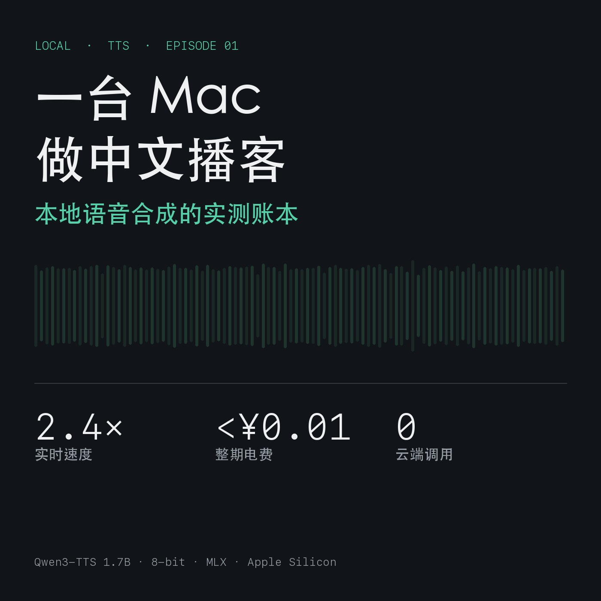

Local First · Episode 01
一台 Mac 做中文播客：本地语音合成的实测账本
2026-11-10 · 实测于 Apple Silicon（M1 Max / 64 GB）· 全离线，零云端调用 配套音频：第 01 期（9 分 43 秒，本机生成） 代码：tts_pipeline.py
0. 三条结论（先说，再验）
- 本地中文 TTS 已经越过"能用"的门槛：2128 字稿子 → 9 分 43 秒音频，合成耗时 3 分 55 秒，2.48 倍实时，实时率（RTF）50 段全部落在 0.40 附近，最快最慢只差 14%。
- 省钱不是理由：同样两千字，国内商用 TTS 约 0.6–1.1 元，本地电费不到 1 分钱——但绝对差额只有一块钱。为省钱去部署本地模型，投入产出比为负。
- 真正的理由是"改稿自由"：不按字符计费，才敢把一句话重写八遍。本地化买到的不是成本，是编辑权。
1. 测试环境与口径
| 项目 | 值 |
|---|---|
| 机器 | Apple Silicon，M1 Max，64 GB 统一内存 |
| 系统 | macOS 27.2 (Darwin 27.2.0) |
| 模型 | Qwen3-TTS-12Hz-1.7B-VoiceDesign，8-bit 量化 |
| 推理栈 | MLX（Apple 官方框架）+ mlx-audio，常驻 Python 进程 |
| 服务形态 | 本地 HTTP，POST http://127.0.0.1:5091/v1/audio/speech |
| 输出 | 24 kHz / 单声道 / 16-bit WAV，转 AAC 96 kbps |
| 网络 | 全流程离线，无任何云端调用 |
三项口径说明，避免误读：
- RTF（real-time factor） = 合成耗时 ÷ 音频时长，越小越快。
- 文本切分按中文句末标点（。！？；），每段 ≤ 460 字（服务端硬上限 500 字符）。
- 语速按"字/分钟"计，本期为 219 字/分钟，属正常播讲速度。
2. 速度：稳定得有点意外
50 段合成单元（最短 6 字，最长 97 字）的实测分布：
| 指标 | 数值 |
|---|---|
| 总字数 | 2128 |
| 音频时长 | 582.7 s（9 分 43 秒） |
| 合成耗时（墙钟） | 235.4 s（3 分 55 秒） |
| 平均 RTF | 0.404 |
| RTF 中位数 | 0.401 |
| RTF 区间 | 0.397 – 0.451 |
| 等效速度 | 2.48× 实时 |
| 吞吐 | 219 字/分钟音频 |
几个值得记下来的观察：
（1）RTF 几乎不随文本长度变化。 6 字的短句 RTF 0.43，97 字的长段 RTF 0.39。这意味着你可以用"总字数"直接估算生产时间：每千字约 110 秒。
（2）短句反而"更贵"。 固定开销（请求、解码预热）摊在短句上更明显。所以切句不宜过碎——但听感又要求切句不能太粗，这是一个真实的取舍，见第 5 节。
（3）串行不是瓶颈。 本期是单请求串行生成（服务端一次只处理一个请求）。即使这样，做一期 10 分钟节目也只要 4 分钟。并发优化在这个量级上没有意义。
3. 成本：省下的钱不如你想象的多
| 方案 | 计价 | 本期 2128 字的成本 | 每万字成本 |
|---|---|---|---|
| 火山引擎（豆包 TTS，按量） | 约 3–5 元/万字符 | ¥0.63 – ¥1.06 | ¥3 – ¥5 |
| 火山引擎（资源包 10 万字档） | ¥28 / 10 万字 | ¥0.59 | ¥2.8 |
| ElevenLabs Flash/Turbo | $0.04–0.05 / 千字符 | ≈ ¥0.75（$0.105） | ≈ ¥3.5 |
| ElevenLabs v3 | $0.10 / 千字符 | ≈ ¥1.50 | ≈ ¥7.1 |
| 本地（本机） | 电费 | < ¥0.01 | < ¥0.05 |
汇率按 1 USD ≈ 7.1 CNY；电费按 40 W 满载、¥0.6/度估算（229 s × 40 W ≈ 2.5 Wh ≈ 0.0025 度）。
结论很朴素：本地方案省的是"边际成本"，但基数太小。一期节目省 1 块钱，一年 100 期省 100 块。任何一次为了部署它而多花的两小时，都不值这个价。
那本地部署的价值到底在哪？我认为有三条，按重要性排序：
- 改稿成本为零。商用按字符计费，会让你在"要不要重写这段"上犹豫——这种犹豫会直接降低内容质量。本期节目我重跑了三遍（数字对不上重跑、断句不好重跑），一次一分钱都不用付。
- 内容不出本机。未定稿的稿子、客户材料、内部复盘，不适合传给任何第三方。
- 可控性。音色、语速、情绪都用自然语言描述，而不是在几十个预设音色里挑一个"最不别扭"的。
4. 一个反直觉的发现：音色是描述出来的，不是挑选出来的
这套模型叫 VoiceDesign，它的接口不接收音色 ID，而接收一段自然语言描述：
{
"model": "Qwen3-TTS-12Hz-1.7B-VoiceDesign-8bit",
"input": "这是一次本机语音合成测速。",
"instructions": "成年男性，低沉清晰，标准普通话，语速适中偏慢，不要夸张的播音腔，像在认真讲一件事，句子之间留一点呼吸感。",
"response_format": "wav"
}
实测下来，描述越具体，输出越稳。写"好听一点""自然一点"，输出会飘；写"成年男性、语速适中偏慢、不要播音腔"，同一段描述连跑 50 次，音色和语速基本一致。
这是一次交互范式的变化：你给的不是参数，是意图。代价是意图必须写清楚——这本身是一种新的写作能力。
5. 四个必须自己缝的坑
工具解决摩擦，不解决品质。以下是这一晚真实踩到的：
坑 1：单次输入硬上限 500 字符。 必须切句。而切在哪里直接决定听感：切在逗号后，气口是断的；切在句号后，才像一句话说完。同样的音色和文字，仅断句位置不同，听感能差一个档位。
坑 2：长文本韵律漂移。 同一段话超过 4–5 句后，重音开始乱，句尾会不自觉上扬。解决办法是长段切短，并且每段都重复同一条音色描述，让模型每次重新对齐。
坑 3：专有名词。
数字、英文缩写、人名地名是合成语音最容易露怯的地方。最稳的做法不是调模型，而是在朗读稿里把它们改写成中文读法（2.48× → 二点五倍，TTS → 语音合成）。这一点和真人配音的稿子准备是一样的。
坑 4：响度不统一。 分句生成再拼接，每句音量有细微差异，拼起来像剪辑粗糙的录音。必须做一次统一的峰值归一/限幅，否则听众三分钟内就会关掉。
结论：真正的工作量不在"生成"，而在缝补。这四件事做完，一期节目才算能听。
6. 实现：120 行代码的流水线
核心只有五步。完整脚本见 scripts/tts_pipeline.py。
# 1) 切句：按段落分组，按句末标点切
sentences = re.split(r"(?<=[。！？；])", block)
# 2) 打包：合并到 ≤460 字，记录是否段尾
units = pack(paragraphs)
# 3) 合成：串行请求本地服务，失败重试 3 次
audio, gen = synth(text, voice)
# 4) 拼接：句间停 0.18 s，段间停 0.55 s
pieces.append(np.zeros(int(rate * gap), dtype=np.float32))
# 5) 响度统一 + 导出 m4a
audio = np.tanh(audio / peak) * 0.89
subprocess.run(["afconvert", "-f", "m4af", "-d", "aac", "-q", "127", wav, m4a])
跑一遍：
./start.sh tts # 起本地服务，等 /health 返回 ready
python3 scripts/tts_pipeline.py \
--script episodes/ep01/script_zh.txt \
--out audio/ep01
# → 50 段合成，3 分 55 秒，输出 ep01.wav / ep01.m4a / ep01.report.json
report.json 会记录每段的字数、音频时长、耗时、RTF，方便复现和对比。
7. 分发：RSS 就够，不用买任何托管
很多人以为上播客要先注册平台，其实播客生态的协议是 RSS：一份 XML + 音频文件放在任意可公开访问的静态站点上，Apple Podcasts、Spotify、小宇宙、Pocket Casts 都能直接订阅。
本期用的是 GitHub Pages（免费、支持 HTTPS、支持字节范围请求——这是播放器拖动进度条的前提）。
python3 scripts/make_feed.py \
--base https://<user>.github.io/<repo> \
--out site/feed.xml \
--episodes episodes/ep01/ep01.m4a \
--titles "一台 Mac 做中文播客：本地语音合成的实测账本"
注意几个容易踩的点：
<enclosure>必须同时带url、length、type，缺一个 Apple 就报"Feed 中没有单集"。- 服务器必须支持 HEAD 与 Range 请求，否则部分客户端无法播放（Apple 官方说明）。
- 封面 1400×1400 或 3000×3000，JPG/PNG，小于 500 KB。
- 提交到 Apple Podcasts Connect 后要过技术验证 + 内容审核；小宇宙支持 RSS 导入（不强制实名，但需账号）。
8. 适合谁，不适合谁
适合：
- 高频更新、需要反复改稿的知识型主播（改一版重跑 4 分钟，零边际成本）
- 内容不便上云的专业人士（法律、医疗、企业内部材料）
- 想把长文变成音频、给文章加一个"收听"入口的写作者
不适合：
- 需要真实情绪和即兴反应的访谈/对谈节目
- 把声音本身当卖点的播音作品（广告、纪录片旁白）
- 追求"一次成型"的场景：本方案需要 4 个后处理步骤才达标
9. 一条态度问题：披露义务
用合成声音做节目，应该在节目里说清楚。这不是法律要求（各国规定不一），是听众信任的成本。藏着不说，被发现一次，就再也没有第二次。
本期节目在开场第 6 行明确说明了"这期节目本身就是用这套流程生成的"。我认为这应该成为默认做法，而不是可选项。
10. 复现清单
| 文件 | 作用 |
|---|---|
scripts/tts_pipeline.py |
切句 → 合成 → 拼接 → 响度 → 导出 m4a |
scripts/make_feed.py |
生成符合 iTunes 规范的 RSS |
scripts/make_cover.py |
用真实波形生成 1400×1400 封面 |
episodes/ep01/script_zh.txt |
本期朗读稿（2128 字） |
episodes/ep01/ep01.report.json |
50 段逐段实测数据 |
episodes/ep01/ep01.m4a |
成品音频（9 分 43 秒，2.5 MB） |
环境依赖：macOS + MLX + mlx-audio；TTS 服务需支持 /v1/audio/speech（本期为本地自建，OpenAI 兼容格式）。
附：一句话总结
本地 TTS 现在的能力是"一个不会疲倦、不会抱怨、也不要钱的配音员，但它需要你把稿子写到足够干净"。
真正的门槛从来不在模型，而在断句、改稿、披露这三件人做的事。
数据来源：本期为本机实测，原始逐段数据见 ep01.report.json；商用 TTS 价格为 2026-10 公开报价（火山引擎计费说明、ElevenLabs 定价整理），实际以各平台当期账单为准。